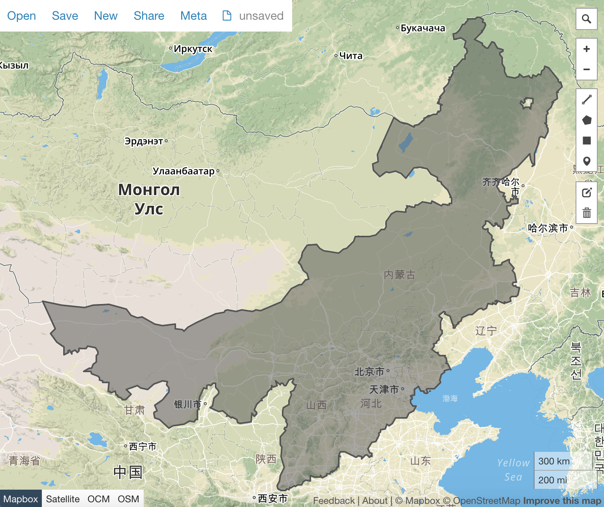

Make northern China map
Introduction
Do you want to know how seven regions of China is authored? This section will reveal the techinical details. It is not that difficult at all.

Theory
All we need is echarts-mapmaker and echarts' map resource.
echarts:map/json/china.json provides a China map with individual provinces and
regions. In this section, we are going to learn how we separate the features,
and stiches the chosen shapes together.
Tutorial
- git clone https://github.com/apache/incubator-echarts。Please do not download the actual file.
- copy incubator-echarts/map/json/china.json to your current working directory
-
use echarts-mapmaker' split command to split
china.json, so as to get individual provinces and regions.$ split china.json $ ls china.json 吉林.geojson 山东.geojson 江苏.geojson 海南.geojson 福建.geojson 陕西.geojson 上海.geojson 四川.geojson 山西.geojson 江西.geojson 湖北.geojson 西藏.geojson 青海.geojson 云南.geojson 天津.geojson 广东.geojson 河北.geojson 湖南.geojson 贵州.geojson 香港.geojson 北京.geojson 宁夏.geojson 广西.geojson 河南.geojson 澳门.geojson 辽宁.geojson 内蒙古.geojson 台湾.geojson 安徽.geojson 新疆.geojson 浙江.geojson 甘肃.geojson 重庆.geojson 黑龙江.geojsonVoila, it is done!
-
Merge! What the provinces for northen China: Hebei, Inner Mongolia, Shanxi, Beijing and Tianjin.
$ merge 河北.geojson 内蒙古.geojson $ merge merged_河北.geojson 山西.geojson $ merge merged_merged_河北.geojson 北京.geojson $ merge merged_merged_merged_河北.geojson 天津.geojson $ mv merged_merged_merged_merged_河北.geojson 华北.geojson怎么会有这么多 'merged_' ？
merge工具自动加一个前缀，运行多次，就有这么多了。有改进意见的话，可以告诉我。 -
Let's preview our map.
Please note the merged map has been UTF8 encoded. In order to use geojson.io to preview it, we need to decode it first
decode 华北.geojson huabei.geojsonThen drag and drop it into geojson.io:
Make a contour
- Please remember that we need to decode the merged geojson file.
-
mapshaper could help us in getting rid of its borders:
mapshaper huabei.geojson -dissolve2 -o huabei-shape-only.geojson1. Let's view the result
Home work
- Take this reference, make a js version.
- Make a central China map
- Make a China map with seven regions.